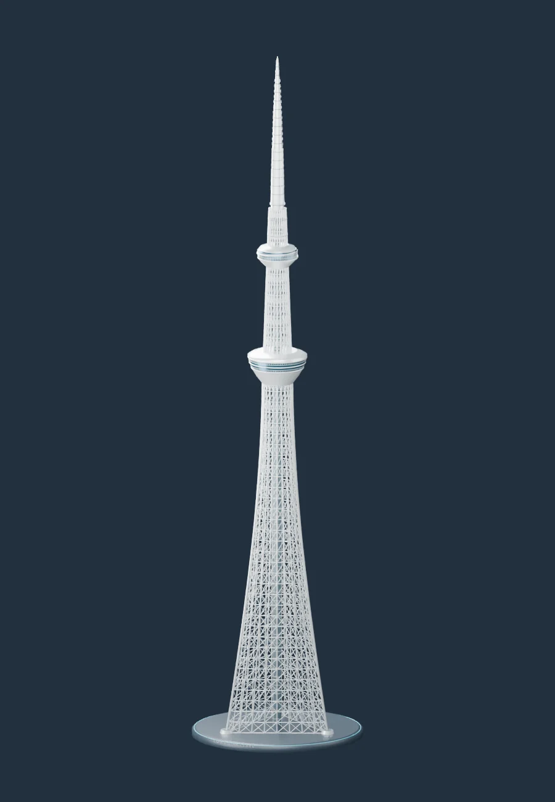
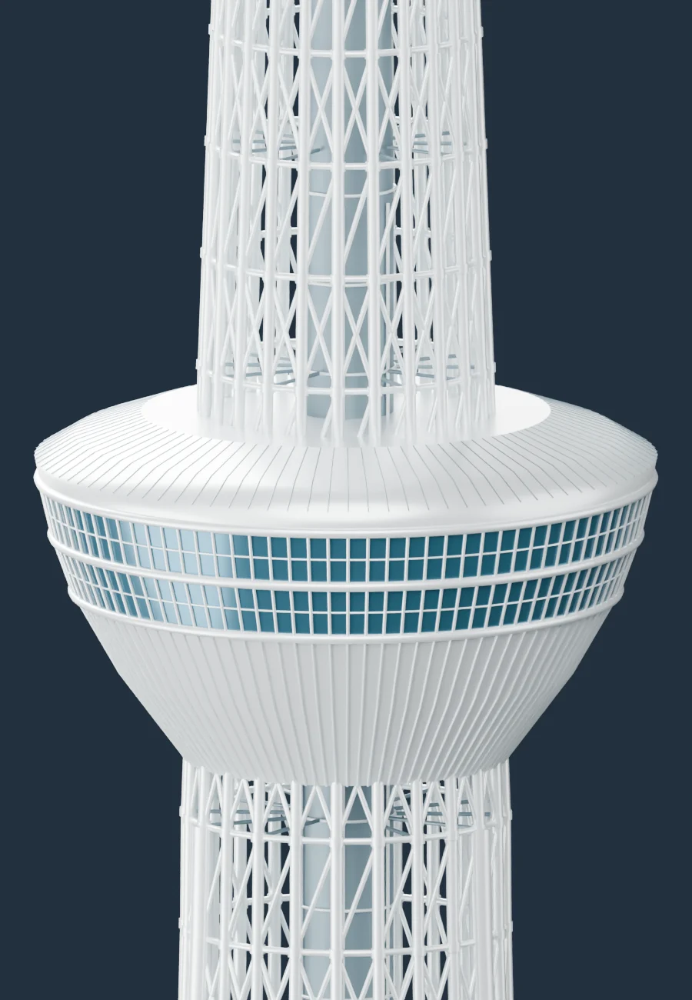

ARCHITECTURE, IN EVERY DIRECTION.
TOKYO
SKYTREE/ 360
空へ伸びる、その構造を。
いつも見上げるタワーを、自由な視点で。
回して、近づいて、細部を見つける。
スカイツリーの小さなデジタル建築展。
634m
HEIGHT
360°
PERSPECTIVE
DIGITAL MODEL STUDY NO. 001 / TOKYO
INTERACTIVE 3D
↻タワーを組み立てています3Dモデルを読み込み中…

3D表示を読み込めませんでした
通信環境とWebGL対応ブラウザをご確認ください。
完成画像を見る ↗
01 / 04タワー全景
↔ ドラッグで回転⊕ スクロール / ピンチで拡大
02 / A CLOSER LOOK
遠くからでは、
見えない美しさ。
緻密に重なる鉄骨、円を描く窓、空中をめぐる回廊。
ひとつずつのディテールが、タワーの輪郭をつくります。

Blenderで制作した外観の近似モデルを展示しています。実施設計図に基づくものではありません。
建築の参考資料 ↗